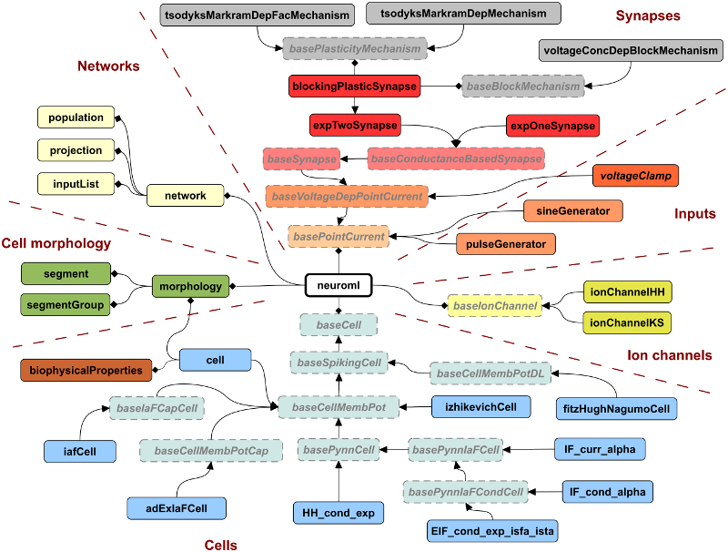
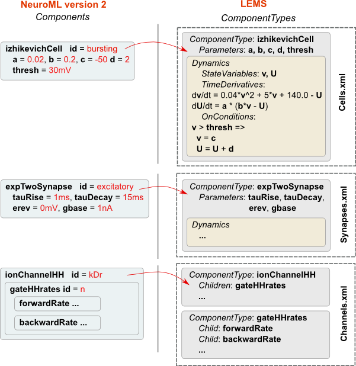

Specification¶
NeuroML v2.0 is the current stable release of the language, and is described below.
For an overview of the various releases of the language see: A brief history of NeuroML.
Here, we continue from the Getting Started tutorial to dive into more details of NeuroML 2. We explain how the specification is written, perhaps show an example specification file. We explain how/why LEMS is needed, and give an overview of LEMS. Then, we provide links to all the schemas.
The XML language itself has no predefined tags. So, for NeuroML, we develop a “schema” that defines valid, standard tags to be used in NeuroML files.

Fig. 13 Structure of the NeuroML v2.0 specification.¶
NeuroML version 2 makes use of LEMS (Low Entropy Language Specification).

Fig. 14 This image (adapted from Vella et al. 2014) shows the usage of LEMS ComponentTypes and Components in NeuroML. Elements in NeuroML v2 are Components which have a corresponding structural and mathematical definition in LEMS ComponentTypes. A number of examples of ComponentTypes in LEMS are shown. A ComponentType izhikevichCell is defined in LEMS, and its parameters are specified as a, b, c, d, and thresh. The Dynamics of the ComponentType defines the state variables v and U. LEMS specifies how these vary with time. Conditions such as when the membrane potential crosses firing threshold are also defined using OnConditions. Shortened examples of a synapse (expTwoSynapse) and an ion channel model (ionChannelHH) are also shown. Instances of LEMS ComponentTypes can be created by specifying the values for each of the parameters. These instances are usually contained in NeuroML XML files.¶
LEMS¶
Warning
A better high level introduction that is independent of NeuroML, perhaps with an example, is needed here.
For an in-depth guide to LEMS, please see the research paper: LEMS: a language for expressing complex biological models in concise and hierarchical form and its use in underpinning NeuroML 2
LEMS is an XML based language with interpreter originally developed by Robert Cannon for specifying generic models of hybrid dynamical systems. ComponentType (ComponentClass was briefly used as a name for these) elements which specify Parameters, StateVariables and their Dynamics and Structure can be defined as templates for model elements (e.g. HH ion channels, abstract cells, etc.). Components are instances of these with specific values of Parameters (e.g. HH squid axon Na+ channel, I&F cell with threshold -60mV, etc.).
There is a core set of ComponentTypes describing the behaviour of dynamical elements in NeuroML 2 in LEMS:
Cell models: Cells.xml (source in LEMS)
Network elements: Networks.xml (source in LEMS)
Ion channels: Channels.xml (source in LEMS)
Synapse models: Synapses.xml (source in LEMS)
Mapping of PyNN cells & synapses: PyNN.xml (source in LEMS)
Dimensions/units allowed: NeuroMLCoreDimensions.xml (source in LEMS)
These serve as the basis for Component definitions in NeuroML 2 files, e.g. izhikevichCell, iafTauCell, ionChannelHH, etc. The behaviour of the model element (e.g. the behaviour of v in terms of threshold, reset, tau in a simple I&F cell) is specified in the ComponentType, and the user only has to supply the name of the ComponentType and give parameter values to create a Component in their NeuroML file.
Note that specifying a Component does not imply that an instance of the model is created. Instances will only be instantiated when the cells are created in a population which is present in a network.
Using LEMS to specify the core of NeuroML version 2 has the following significant advantages:
NeuroML 2 XML files can be used standalone by applications in the same way as NeuroML v1.x, without using LEMS, easing the transition for v1.x compliant applications
Any NeuroML 2 ComponentType can be extended and will be usable/translatable by any application (e.g. jLEMS) which understands LEMS
The first point above means that a parsing application does not have to natively read the LEMS type definition for, e.g. an izhikevichCell element, it just has to map the NeuroML element parameters onto its own object implementing that entity. The behaviour should be the same and should be tested against the reference LEMS implementation (jLEMS).
The second point above means that if an application does support LEMS, it can automatically parse (and generate code for) a wide range of NeuroML 2 cells, channels and synapses, including any new ComponentType derived from these, without having to natively know anything about channels, cell models, etc.